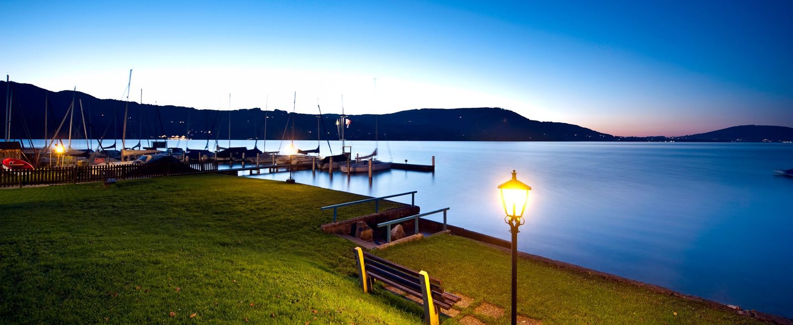
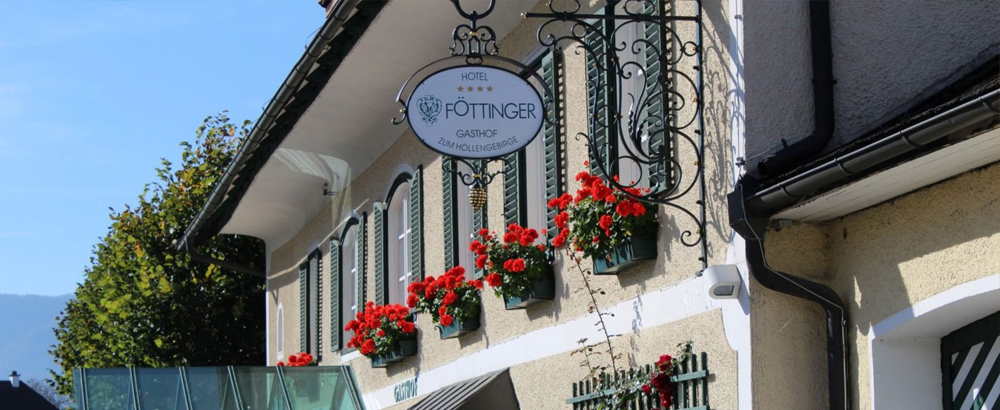
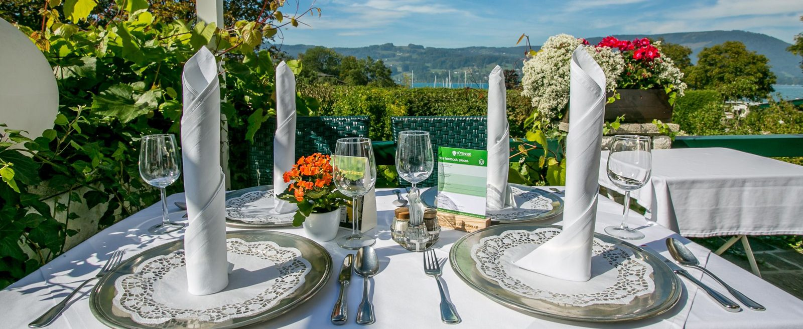
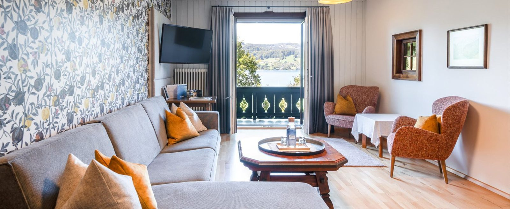
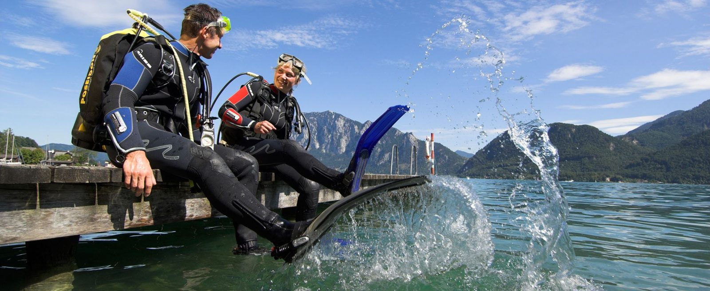
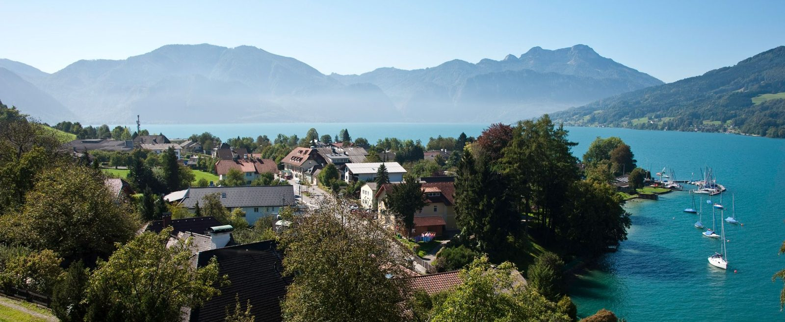
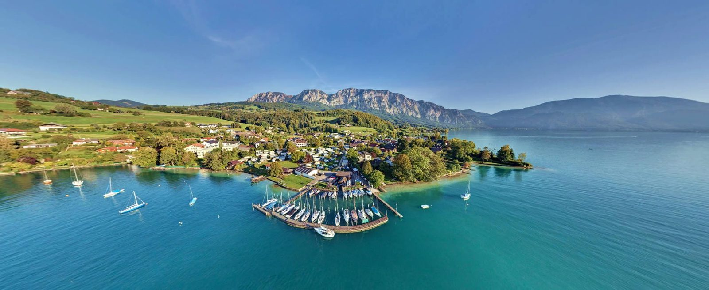
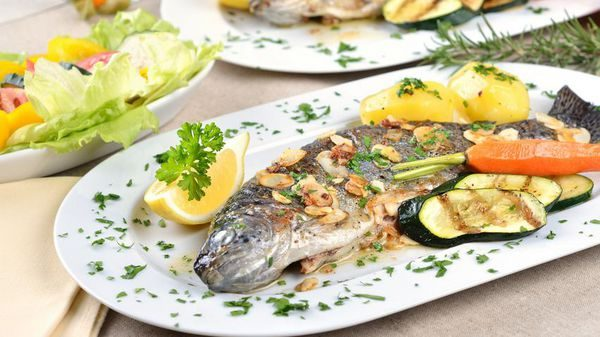

Vier Sterne am sonnigsten Ort des Attersees
Schlafen, wo der
See beginnt.
Eigener Strand, hoteleigener Steg, Panorama-SPA und Sauna direkt am Wasser: Seit 1869 sind hier Tradition und österreichische Gastlichkeit zuhause – heute mit Tauchbasis, Seminarräumen und eigenem Campingplatz.
- Saison Hotel
- 24.4. – 4.10.2026
- Kategorie
- 4-Sterne-Seehotel
- Am Haus
- Strand, Steg, SPA
- Mitglied
- Attersee7
- 172 Meter Seetiefe
- 40 Meter Tauchplattform
- 1869 Gastlichkeit seit
- 28 Personen im Seminar
- 77 km² Naturpark
Ankommen
Ein Haus, das den See nicht nur ansieht, sondern in ihm steht
Das Hotel mit Tauchbasis liegt direkt am Attersee – mit eigenem Strand und hoteleigenem Steg, an dem Sie auch Ihr Segelboot „parken“ können.
Als Gast unseres Traditionshotels nutzen Sie unsere Sauna direkt am See sowie das neue, einzigartige Panorama-SPA kostenlos. Damals wie heute hinterlässt die Landschaft um den Attersee im Salzkammergut mit ihrer unverfälschten Kulisse einen bleibenden Eindruck: Die Berge spiegeln sich im einzigartigen Türkisblau des Sees, die Wiesen duften nach Heublumen.
Ihre Gastgeberfamilie Föttinger freut sich, Sie begrüßen zu dürfen.
Der Videolink führt zu YouTube. 360°-Panorama und virtueller Rundgang sind ebenfalls verfügbar.

Das Haus in sechs Kapiteln
Vom Zimmer mit Loggia bis zur Füllstation am Wasser

Zimmer zum Wohlfühlen
Großzügige Zimmer und Gasträume, modern ausgestattet und von heimischen Handwerksbetrieben gefertigt. Liebevolle Details wie Kurbeltelefone erinnern an vergangene Zeiten.
Zimmer & Preisliste 2026
Restaurant & Kulinarik
Genuss à la carte, täglich frisch gekocht: bodenständige, regionale Gerichte und fangfrische Fische aus heimischen Gewässern – auf der Terrasse am See.
Küche & Öffnungszeiten
Seminarhotel
Zwei Seminarräume mit Tageslicht, Eventsaal und maßgeschneiderte Rahmenprogramme zur Teamstärkung – Technik inklusive.
Räume & Technik
Tauchbasis & Camping
Plattformen bis 40 Meter, Unterwasserkuppeln, NITROX-Füllstation – und der Campingplatz direkt am Seeufer.
Tauchen & Camping
Naturpark & Berge
Naturpark Attersee-Traunsee, Bergsteigerdorf Steinbach, Klettersteig Madlgupf und der Naturboulderpark Forstamt.
Umgebung entdecken
Anfragen & schenken
Unverbindliche Anfrage für Hotel oder Camping, individuelle Gutscheine und die Online-Anzahlung zu Ihrer Buchung.
Anfrage, Gutschein, Anzahlung
Inklusive für Hotelgäste
Neun Dinge, für die Sie nichts extra zahlen
- Panoramasauna
- WLAN im ganzen Haus
- Walkingequipment & Tourentipps
- Salzkammergut-Card, ab 3 Nächten kostenlos
- Nostalgieschifffahrt am Attersee
- hauseigene Liegewiese am See
- SUP-Verleih
- Fahrradverleih
- Parkplatz
Öffnungszeiten
Wann wir für Sie da sind
- Hotel
- 24. April – 4. Oktober 2026
- Restaurant
- geöffnet bis 4. Oktober 2026
- Ruhetag Restaurant
- Mittwoch
- Frühstück
- 07:30 – 10:00
- Mittag
- 12:00 – 14:00
- Nachmittag
- 14:00 – 17:00
- Abend
- 18:00 – 21:00
Änderungen vorbehalten. Warme Gourmetküche täglich von 12:00 bis 14:00 und 18:00 bis 21:00 Uhr.
Freude schenken
Gutscheine nach Ihren Wünschen
Möchten Sie Ihren Freunden und Bekannten Freude bereiten? Wir stellen nach Ihren Wünschen individuelle Gutscheine zusammen – für eine Nacht am See, ein Abendessen auf der Terrasse oder einen Tauchgang im Trinkwasser.
Kinder
- 0 – 3 Jahre
- gratis
- 3 – 10 Jahre
- 50 Prozent Nachlass
- 10 – 15 Jahre
- 30 Prozent Nachlass
„Wunderschön war diese kleine Reise, auf der ich zum erstenmal in meinem Leben das Hochgebirg und den weit ausgegossenen Attersee erblickte.“ Caroline Pichler, Schriftstellerin und Salondame (1769–1843)
Gustav Mahler (1860–1911)
Komponieren im Einklang mit dem Wasser
Gustav Mahler war in den Sommermonaten 1893 bis 1896 Gast in Steinbach am Attersee und komponierte hier Teile der 2. sowie die gesamte 3. Symphonie. Sein Komponierhäuschen ist ganzjährig für Besucher gegen Voranmeldung geöffnet.
„Es ist, wie wenn ein Schwimmer eine Riesenstrecke bis ans andere Ufer zurückzulegen hätte: im Anfang ist gar kein Absehen auf das Ende, immer Wasser, Wasser, das gar nicht weniger zu werden scheint. Und in der Mitte, wie weit und unerreichbar dünkt uns noch das Ziel. Aber endlich rückt es näher und näher, zum Schluß mindern sich rapid die Fluten und mit ein paar Schlägen ist´s getan.“ Gustav Mahler zu Natalie Bauer-Lechner nach Beendigung seiner 3. Symphonie
„Im Adagio ist alles aufgelöst in Ruhe und Sein.“
Mehr Informationen zu Gustav Mahler in Steinbach am Attersee: www.mahler-steinbach.at
Galerie
Das Haus, der See, die Zimmer

Alle Fotos stammen von der bestehenden Website des Betriebs. Zusätzlich stehen ein Hotelvideo, ein 360°-Panorama und ein virtueller Rundgang zur Verfügung.
Ihr Urlaub am Attersee beginnt mit einer Nachricht
Senden Sie uns eine unverbindliche Anfrage für Hotel oder Campingplatz – wir schicken Ihnen ein Angebot, das individuell auf Sie zugeschnitten ist.